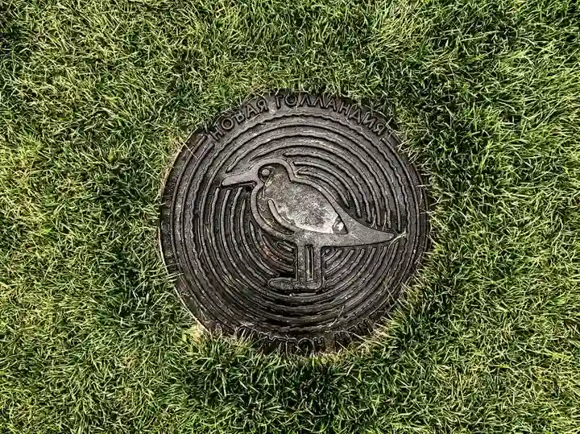

Contact Drain Cleaning Advisor
Have a backed-up fixture, slow drain line, or sewer odor in your home or commercial building? Call our local dispatch desk directly for immediate assistance or complete our estimate request form below.

Emergency Drainage Diagnostic Check Sheet
Review these four critical indicators before calling our dispatch office. Relaying these observations helps our technicians arrive with the exact specialized tooling needed for your home.
Check 1: Toilet Water Level Fluctuations
Notice whether your toilet bowl water rises abnormally high or drops down to a tiny puddle when not in use. Siphoning water levels indicate negative vacuum pressure caused by a mainline obstruction downstream.
Check 2: Washing Machine Discharge Reaction
When your washing machine pumps out its wash cycle, observe whether water surges out of the laundry standpipe or bubbles up in an adjacent kitchen sink. This confirms whether the branch line or the central stack is restricted.
Check 3: Cleanout Overflow Visual Check
Walk outside and inspect your exterior yard cleanout cap. If gray water or sewage is seeping out around the threaded cleanout cap in your flowerbeds, your main sewer lateral is 100% blocked and requires immediate high-torque snaking.
Seamless Dispatch & Arrival Coordination in Naples
When you reach out to our local Naples dispatch team, you speak with a knowledgeable plumbing coordinator who understands Collier County drainage systems.
Live GPS Tracking & ETA Alerts
No waiting around all day wondering when a plumber will show up. You receive a direct SMS text message when your technician is en route, complete with live GPS ETA and your technician's name and photo identification for total security.
Fully Equipped Service Vans
Our technicians do not need to make trips back to a supply house. Our Mercedes Sprinter service vans carry complete optic camera rigs, multiple inner-core drum machines, trailer jetters, cleanout caps, and sanitary floor protection mats on every call.
Post-Clearing Flow Guarantee
Before concluding service, our technician conducts a comprehensive multi-fixture volume flow test. We fill and flush every toilet and tub simultaneously, verifying that the entire lateral discharges smoothly to the municipal sewer with zero gurgling.
Collier County Fleet Logistics & Emergency Response Zones
Our centrally coordinated dispatch operations ensure reliable, fast response times across all primary residential and commercial districts throughout greater Naples.
Commercial Hospitality Dispatch
For restaurants along 5th Avenue South, 3rd Street South, and Mercato facing line stoppages during dinner service, our priority commercial response team arrives equipped with grease-cutting jetting rigs to prevent dining room closures.
Residential Neighborhood Dispatch
Serving Port Royal, Old Naples, Pelican Bay, Park Shore, The Moorings, Pine Ridge, and North Naples with clear 2-hour arrival windows, direct text ETA notifications, and fully transparent pricing before any work begins.
Payment Transparency & Invoicing
We accept all major credit cards, electronic debit, and corporate commercial billing. You receive an itemized electronic receipt and camera inspection verification directly to your email upon service completion.
What to Do Before Your Technician Arrives
Plumbing backups can be stressful and chaotic. Following these proven pre-arrival steps minimizes water damage and accelerates technician diagnostic time.
1. Stop All Water Inflow Immediately
Do not run dishwashers, washing machines, or flush any toilets. If wastewater is active or rising, locate your main house shutoff valve (usually situated in your garage or exterior front wall near the hose spigot) and turn it a quarter-turn clockwise to kill all incoming municipal pressure.
2. Contain Surface Spills
Place old towels or absorbent barriers around bathroom thresholds to keep wastewater from seeping onto adjacent hardwood, carpet, or baseboards. Keep children and family pets completely isolated from gray or black wastewater spills.
3. Clear the Cleanout Pathway
Move patio furniture, potted plants, or vehicles that may obstruct access to your exterior sewer cleanout cap or front driveway. Having a 4-foot clear corridor allows our technician to roll the diagnostic camera and snaking equipment directly into position.
Questions Our Dispatch Desk Will Ask
When you call our local Naples dispatch line at +1 (239) 688-0557, our friendly dispatch coordinator will ask three quick diagnostic questions to ensure the proper equipment arrives on the truck:
Is only one sink or shower slow, or does flushing your toilet cause water to bubble up into your tub? (This distinguishes a small fixture clog from a mainline stoppage).
Is your home connected to City of Naples / Collier County municipal sewer, or does your property use an on-site septic tank and drainfield?
Do you know where your exterior sewer cleanout cap is located in your yard or flowerbed, or will our technician need to locate it upon arrival?
Naples Service Dispatch & Booking FAQs
What are your dispatch operating hours in Naples?
Our dispatch office is staffed 7 days a week, from 7:00 AM to 8:00 PM for standard scheduling, with active emergency standby service for active sewage backups and flood emergencies throughout Collier County.
Do you charge extra for weekend or evening drain cleaning?
We believe in upfront, transparent flat rates. We review all evaluation fees with you over the phone before booking your dispatch window. You never face hidden trip charges or unexpected emergency markups.
What forms of payment do you accept on site?
Our mobile service tablets accept all major credit cards (Visa, MasterCard, American Express, Discover), debit cards, ACH bank transfers, and corporate commercial invoicing for established property managers.
Emergency Commercial Kitchen Standby Support
For commercial restaurant managers along 5th Avenue South, 3rd Street South, and Mercato, a backed-up dish line or floor drain during peak dining hours is a critical business emergency. Our priority commercial dispatch team provides expedited arrival, powerful grease jetting equipment, and full health code compliance documentation so you can resume food service immediately.
Transparent Flat Rates & Upfront Authorization
When you call Drain Cleaning Advisor, you never have to worry about surprise fees. We discuss diagnostic rates upfront, and once our technician inspects your line with a camera, you receive a firm written quote. You authorize the work only when you are 100% satisfied with the scope and pricing.
Flexible Scheduling & Weekend Service in Naples
We understand that drain emergencies do not wait for business hours. Our dispatch office is open 7 days a week, offering same-day appointments, convenient 2-hour arrival windows, and full emergency coverage throughout Collier County so your household routine gets back to normal fast.
Naples Real Estate & Pre-Closing Plumbing Inspections
Purchasing or selling a home in Naples? A standard home inspection rarely examines underground sewer laterals. We provide comprehensive pre-purchase video camera scoping, delivering high-definition digital footage and formal written condition reports to protect buyers from hidden multi-thousand-dollar sewer repair surprises before closing.
Dedicated Property Manager Dispatch Coordination
Managing multiple rental homes, condominium associations, or commercial plazas in Collier County? Our office offers direct portal billing, master account management, and priority technician routing to keep your tenant drainage systems flowing smoothly year-round.
What should I do if my sewer backup occurs late at night in Naples?
If you experience an active sewage backup outside of standard business hours, immediately stop all water use across your home to halt rising wastewater. Call our direct dispatch desk at +1 (239) 688-0557. Our automated priority emergency answering protocol will route your message directly to our on-call field manager, who will contact you immediately to assess whether emergency night dispatch is required or schedule first-priority morning service.
Our Naples Dispatch Information
We operate fully equipped service vehicles throughout Collier County. Contact us directly to confirm service availability for your home or commercial business.
Scheduled service and urgent active backup calls.
Central Collier County dispatch base. Mobile units serve all neighborhoods.
For photos, estate manager quotes, and follow-ups.
Naples Service Area Map
Centrally dispatched from Westview Drive in Naples to provide fast technician arrival across all Collier County zip codes:
- • Port Royal & Old Naples (34102)
- • Moorings & Park Shore (34103)
- • Central Naples & East Naples (34104, 34112)
- • Pelican Bay & Pelican Marsh (34108, 34109)
- • North Naples & Naples Park (34110)
Call +1 (239) 688-0557 to speak with our dispatch team right now.